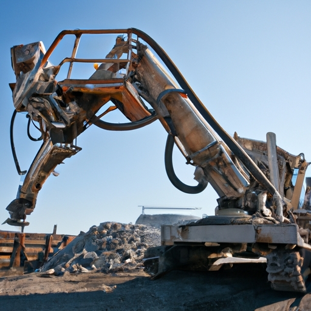

News
Concrete Crusher
Concrete Crusher
Types of concrete crushers
How concrete crushers work
Benefits of using a concrete crusher
Common features of concrete crushers
Maintenance tips for concrete crushers
Types of Concrete Crushers
Types of Concrete Crushers
Jaw crushers
Impact crushers
Cone crushers
Mobile vs stationary concrete crushers
Electric vs dieselpowered concrete crushers
How Concrete Crushers Work
How Concrete Crushers Work
Crushing process in a concrete crusher
Components of a concrete crusher system
Material handling and output mechanisms in a concrete crusher
Safety measures when operating a concrete crusher
Environmental impact of using a concrete crusher
Benefits of Using a Concrete Crusher
Benefits of Using a Concrete Crusher
Cost savings associated with using a concrete crusher
Time efficiency when crushing large quantities of materials
Reduced need for landfill disposal
Ability to recycle and reuse crushed materials
Wide range of applications for crushed materials
Maintenance Tips for Concrete Crushers
Maintenance Tips for Concrete Crushers
Regular inspection and cleaning procedures
Greasing and lubrication requirements for optimal performance
Replacement schedule for wear parts
Proper storage and transportation practices
Troubleshooting common issues with concrete crushers
About Us
Contact Us
GrinderCrusherScreen
What is a concrete crusher and how does it work?
Sep 14, 2024
A concrete crusher is a piece of equipment used to crush large chunks of concrete into smaller pieces that can be used as gravel for construction projects.. It works by using a hydraulic arm to apply pressure to the concrete, breaking it down into manageable pieces. When using a concrete crusher, it is important to follow safety precautions to prevent accidents and injuries.
What are the benefits of using a concrete crusher for demolition projects?
Sep 14, 2024
Improved job site cleanliness and organization are key benefits of using a concrete crusher for demolition projects.. When you have a designated machine to crush and recycle concrete materials, you can significantly reduce the amount of debris and waste scattered around the work area.
What types of concrete crushers are available on the market?
Sep 14, 2024
When it comes to concrete crushers, there are several types available on the market to suit various project needs.. One common type is the jaw crusher, which uses a stationary jaw and a moving jaw to break down large chunks of concrete into smaller pieces.
What safety precautions should be followed when operating a concrete crusher?
Sep 14, 2024
When operating a concrete crusher, it is crucial to follow safety precautions to ensure the well-being of yourself and those around you.. First and foremost, always wear appropriate personal protective equipment, such as safety glasses, gloves, and steel-toed boots.
How to Crush Concrete with Ease: Introducing the Ultimate Concrete Crusher!
Sep 14, 2024
When it comes to crushing concrete, it's important to consider the environmental impact of this process.. While crushing concrete can be a necessary and efficient way to recycle old buildings or roads, it also has the potential to produce harmful pollutants. One of the main concerns with crushing concrete is the release of dust and other airborne particles.
Discover the Secret to Crushing Concrete like a Pro with This Innovative Crusher
Sep 14, 2024
Concrete crushing projects are an essential part of construction and demolition work, and finding innovative solutions to efficiently crush concrete is crucial for success.. One such solution is utilizing a crusher, a powerful machine that can break down concrete into smaller pieces for easier disposal or recycling. One real-life example of a successful concrete crushing project using a crusher is the renovation of an old industrial building.
Need to Break Down Concrete? Find Out How This Crusher Can Help You Get the Job Done!
Sep 14, 2024
When it comes to breaking down concrete, using a crusher can be a game-changer.. These powerful machines are designed to crush concrete into smaller pieces, making it easier to remove and dispose of.

Learn the Best Technique for Crushing Concrete with This Powerful Crusher You Won't Believe the Results!
Sep 14, 2024
Are you tired of struggling to crush concrete with subpar equipment?. Look no further, because we have the solution for you!
Benefits of using a concrete crusher for construction projects
Sep 14, 2024
Using a concrete crusher for construction projects has numerous benefits, one of which is the ability to reuse crushed concrete as a base material for new construction projects.. This not only helps in reducing waste but also saves money on purchasing new materials.
Environmental impact and sustainability considerations when using a concrete crusher
Sep 14, 2024
Proper maintenance and equipment upkeep are essential for sustainability when using a concrete crusher.. The environmental impact of using such machinery can be significant, but with the right care and attention, we can minimize our footprint on the planet. Regular maintenance of a concrete crusher ensures that it operates efficiently and effectively, reducing the amount of energy and resources needed to crush concrete.